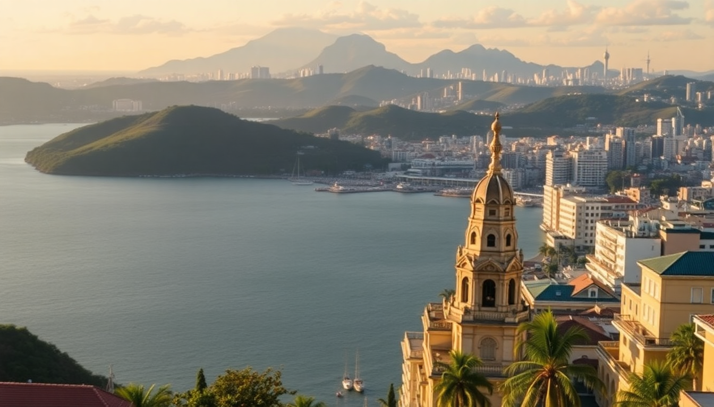

Where to Stay in Cartagena: Best Neighborhoods for Every Budget

I landed in Cartagena thinking I’d spend the whole trip inside the Walled City. Three days later, I was eating fried fish in Getsemani at 11 PM and wondering why anyone would pay triple for a room with a pool they never use. The neighborhoods here aren’t just different prices — they’re different trips. Here’s what each one actually feels like on the ground.
Which neighborhood should I stay in for my first visit?
Getsemani. Full stop. It’s the sweet spot between colonial charm and real Cartagena energy. You’re a five-minute walk from the Walled City’s main plazas, but your beer costs half as much and your neighbors are locals, not cruise-ship day-trippers.
We booked a room at Casa La Fe — a converted colonial house with a rooftop terrace overlooking the church dome. It wasn’t fancy, but the owner brought us fresh mango juice every morning. The streets around Plaza de la Trinidad fill with kids playing soccer and street vendors selling arepas de huevo until midnight.
- Plaza de la Trinidad: The social heart of Getsemani. Grab a chair at Demente for cheap cocktails and people-watching.
- Museo de Arte Moderno: Small but worth 30 minutes if you need air conditioning.
- Callejón del Ancho: Instagram alley, sure, but the murals are genuinely impressive at sunrise when nobody’s there.
Is the Walled City (Centro Histórico) worth the premium?
Only if you value architecture over everything else. The Walled City is stunning — cobblestones, bougainvillea, balconies draped in flowers. But it’s also a theme park. Every second building is a hotel or a jewelry store. Dinner at La Vitrola set us back $80 for two, and the food was good but not life-changing.
If you do stay here, skip the big chains and go boutique. Hotel Casa San Agustín has a pool set into ancient stone walls and service that remembers your name. Cheaper option: El Viajero Hostel on Calle Media Luna — clean dorms and a rooftop bar that gets loud but fun.
- La Vitrola: Overrated Cuban restaurant. Fine for a splurge, but locals send you to El Boliche Cebichería instead.
- Plaza Santo Domingo: Home of the “fat lady” sculpture by Botero. Crowded with selfie sticks by noon.
- Walls of Cartagena: Walk the section near Baluarte de San Ignacio at sunset. Free and the best view in the city.
Where do locals actually live and hang out?
Manga. Nobody talks about Manga in travel blogs, which is exactly why you should consider it. It’s a residential peninsula just south of the Walled City, full of mansions from the early 1900s. Quiet, tree-lined, and ten minutes by taxi to Getsemani.
We stayed at Hotel Boutique Casa La Mantilla — a restored mansion with a courtyard pool and maybe eight rooms total. The neighborhood has zero tourist infrastructure, but that’s the point. You eat at Restaurante La Cevichería (actual locals, actual ceviche) and walk along Avenida Santander past fishermen mending nets.
- Restaurante La Cevichería: Cash only. Get the mixto ceviche.
- Parque de la Marina: Small green space with a view of the bay. Good for morning coffee.
- Manga Bridge: Connects to Getsemani on foot. Safe during daylight.
What’s the deal with Bocagrande for beach lovers?
Bocagrande is Cartagena’s Miami Beach — high-rise hotels, chain restaurants, and a beach that’s fine but not spectacular. The water is murky from boat traffic, and vendors walk the sand every thirty seconds selling sunglasses and massages. If you want Caribbean beaches, take a boat to Islas del Rosario instead.
That said, Bocagrande works if you want air conditioning, a consistent pool, and English-speaking staff. Estelar Bocagrande has rooms with ocean views and a breakfast buffet that includes actual bacon (rarer than you’d think in Colombia). Hotel Capilla del Mar is a step down but half the price.
- Playa de Bocagrande: Swimmable but not pretty. Better for a quick dip than a beach day.
- Mall Plaza Bocagrande: Air-conditioned escape with a food court and movie theater.
- Avenida San Martín: Main drag with ice cream shops and souvenir stalls. Walk it once.
Which neighborhood is best for nightlife without the noise?
San Diego. It’s the northern section of the Walled City, quieter than the tourist crush around Plaza Santo Domingo but still inside the walls. You get colonial charm without the 2 AM reggaeton blasting from every bar.
We had dinner at Celele — currently one of the best restaurants in Colombia, using ingredients from the Caribbean coast. Reservations required, and worth it. Afterward, we walked to Alquímico, a three-story cocktail bar in a restored mansion. The rooftop serves drinks made with local fruits like borojó and lulo.
- Celele: Tasting menu only. Go hungry.
- Alquímico: Order the “Cartagena Sour” and sit on the third floor.
- Hotel Bantu: Mid-range boutique with a tiny pool and a great location on Calle del Sargento.
Should I stay in the suburbs to save money?
El Laguito is the budget-friendly alternative to Bocagrande — same high-rise strip but older buildings and fewer tourists. It’s a fifteen-minute walk to the beach and twenty minutes by taxi to the Walled City. Not charming, but functional.
We booked a two-bedroom Airbnb here for $45 a night. The kitchen had a working stove, the pool was empty most days, and we could walk to Supermercado Olímpica for groceries. If you’re traveling with kids or on a tight budget, this neighborhood stretches your money.
- El Laguito Beach: Quieter than Bocagrande, same water quality.
- Parque del Centenario: Small park near the entrance to the Walled City. Good for a rest stop.
- Taxi tip: Negotiate the fare before getting in. 10,000–15,000 COP for most short trips.
FAQ
Is it safe to walk around Cartagena at night? Yes, in the main tourist areas. Getsemani and the Walled City are well-lit and patrolled by police until late. Stick to main streets like Calle San Juan or Calle de la Media Luna after dark. Avoid the beachfront in Bocagrande after midnight — it’s not dangerous, just empty and sketchy. I walked alone in Getsemani at 11 PM multiple times without issue, but I kept my phone in my pocket and stayed aware.
What’s the best way to get from the airport to my hotel? Take an official airport taxi from the stand outside arrivals. It costs a flat 25,000 COP to anywhere in the city. Uber works but drivers sometimes cancel if they can’t find you. Do not accept rides from touts inside the terminal — they charge triple. The drive to Getsemani takes about twenty minutes, longer in rain.
Can I drink tap water in Cartagena? No. Buy bottled water or use a filtered bottle. Most hotels provide large jugs in the room. Street vendors sell small bags of water for 1,000 COP — they’re fine. Tap water here comes from the Magdalena River and is treated, but your stomach won’t thank you for testing it.
Conclusion
- Getsemani is the best overall choice for first-timers: cheap eats, local vibe, walking distance to everything.
- Walled City is worth a splurge if you care about architecture and don’t mind crowds.
- Manga offers quiet residential life with zero tourist markup — bring your own restaurant list.
- Bocagrande delivers reliable hotels and pools but disappointing beaches.
- San Diego splits the difference between nightlife and quiet charm.
- El Laguito stretches your budget if you cook your own meals and don’t need scenery.